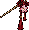

#0 sapling_dead25×36
#1 sapling_burnt 24×37
24×37
#2 bell_red 21×27
21×27
#3 bell_wrapped17×34
#4 kanzashi

29×30#5 manju_basket 29×23
29×23
#6 steamer32×29
#7 kasa_hat 40×21
40×21
#8 grave_a 30×26
30×26
30×26#9 grave_b 31×26
31×26
31×26#10 stall_burning65×26
#11 mask_broken45×23